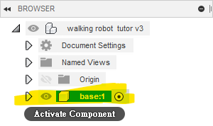
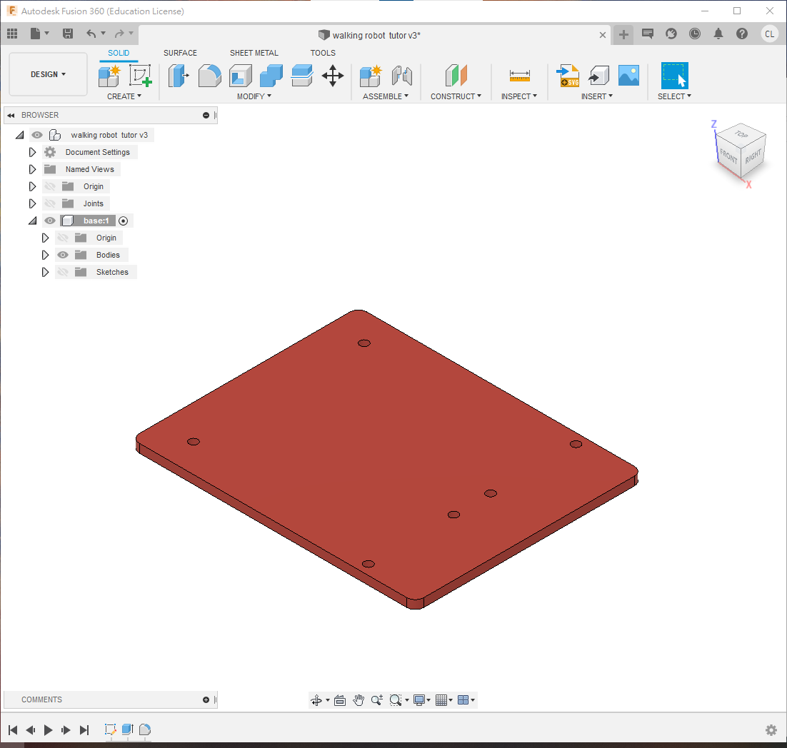
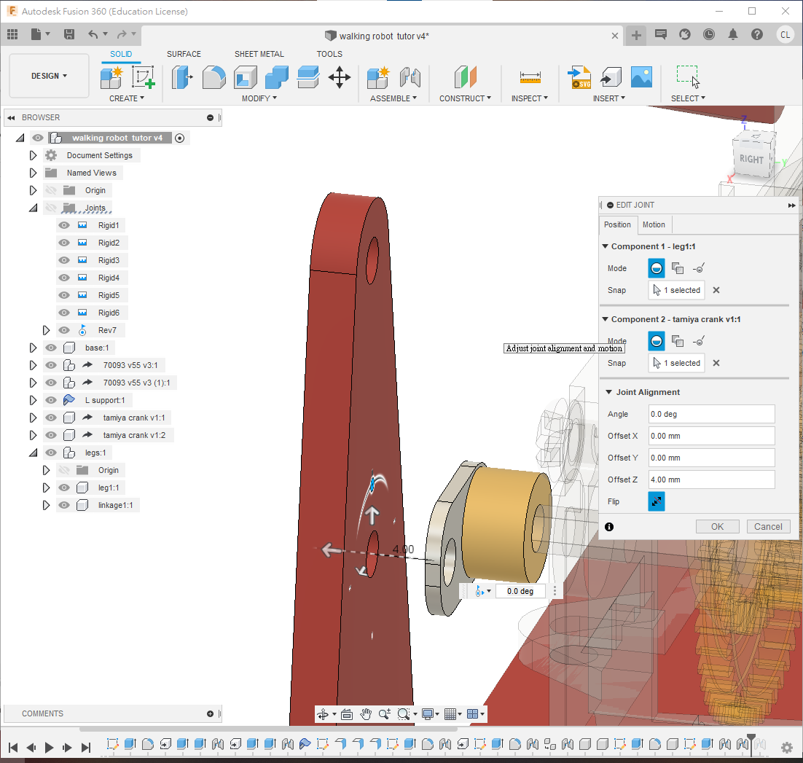
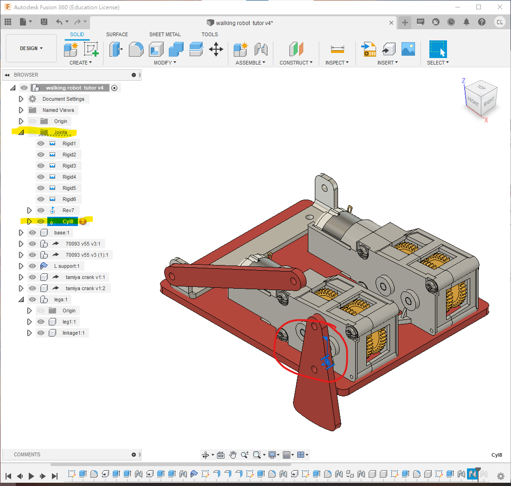
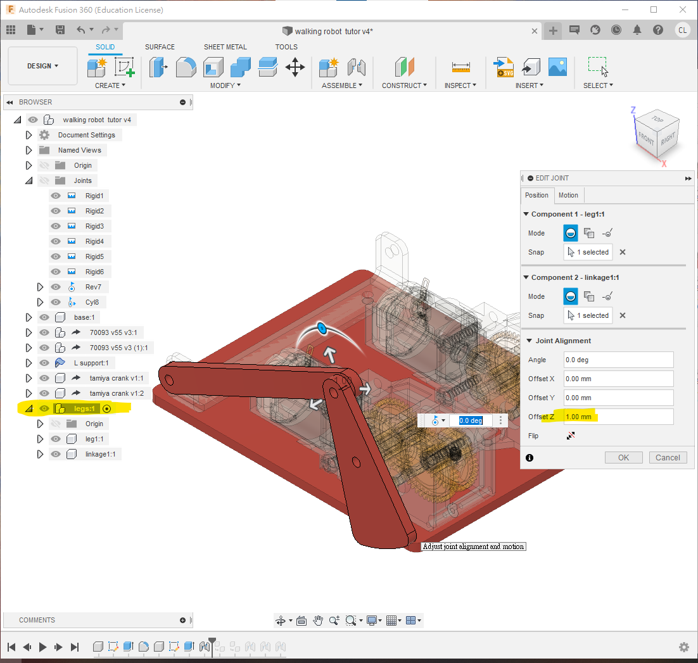
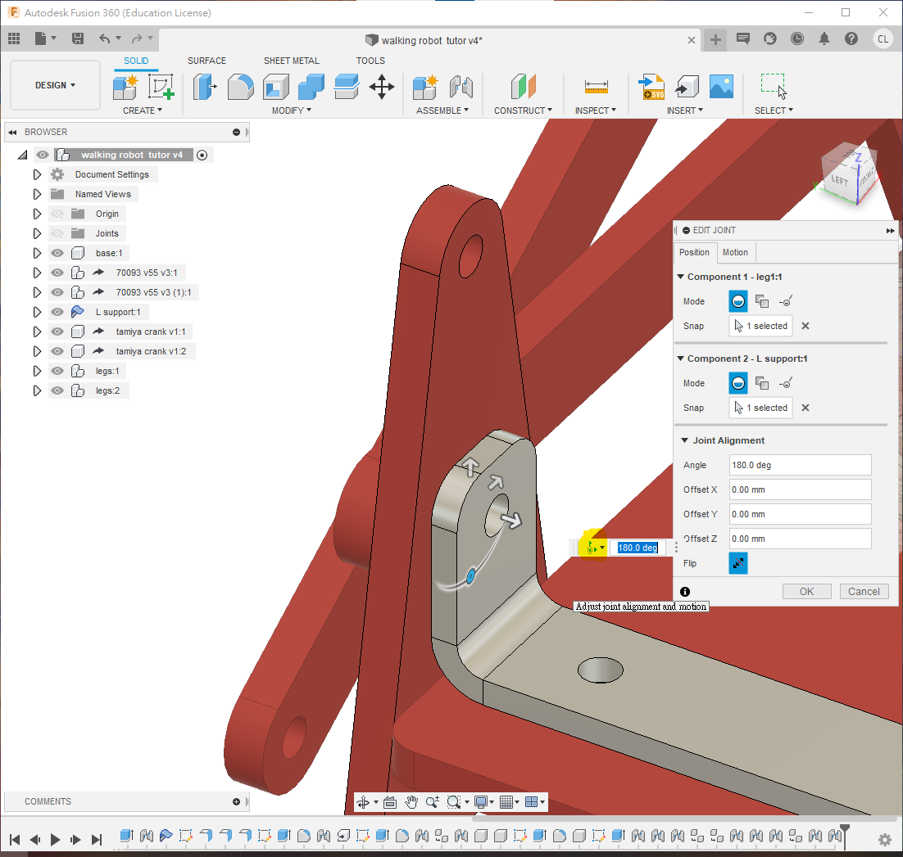

2.3 Walking linkage robot
本節要繪製的，是下圖這一部四足連杆機械人。本節主要學習應用fusion360中的joint功能，應用不同的joint去模擬連杆機械人的效果。

walking robot tutor Drawing v4.pdf
檔案
本次會應用到的檔案(以下為step檔)，下載解壓後，在fusion左邊欄尋找"upload"鍵，就能上載到fuison中應用
useful robotics component step.zip
或者你可以在grabcad.com直接下載fusion360檔案(需要注冊登入)
https://grabcad.com/library/tamiya-70093-3-speed-crank-axle-gearbox-kit-1 https://grabcad.com/library/tamiya-crank-1

STEP 1
首先，繪製底板，用"s"搜尋"new component", 開一個新的component，名為"base", 或者你自己喜歡的名字。並確保黑色小點在旁邊, 代表activate

接著在xy平面(或水平面)， 開一個新的sketch，繪制如下:

- 先用"s"搜尋"change parameter"，開啟參數列表，定義一個新的參數叫"thickness", 值為3mm，跟著用"e"，擠出
thickness的厚度

STEP 2
如果你是直接用fusion360的齒輪箱檔案(f3d或f3z檔)，齒輪箱只有一種規格
💡如果你是用useful robotics components step 的step檔案，step檔案中有一個70093L和70093R的檔案，分別為左和右的齒輪箱，長軸並非對稱。
❗記得要用insert derive功能, 不要直接拖拉gearbox入去, 否則是不能修改的
- 利用"s"搜尋"insert derive"功能，將70093 gearbox插入衍生到此檔案中。
- 在70093的component上, 按mouse右鍵, 選擇rigid group


- 確保小黑點在這個70093 gearbox旁。
- 用"e"將齒輪箱的軸適當地修短(或增長, 如果有需要)
- 再用"j"把齒輪箱組合到底板


- 重復，利用"s"搜尋"derive"功能，將另一個70093 gearbox插入衍生到此檔案中。
- 確保小黑點在新派入的70093旁
- 跟上面一樣，用"e"將齒輪箱的長軸適當修剪一下
- 用"j"組合到底板上
💡如果用step檔案，今次derive的是70093R
❗️記得要用derive功能來插入衍生，不要用copy & paste，否則修改齒輪箱時，左右兩邊會同步喔!!!!

STEP 3
接著:
- 將小黑點退回最上層
- 開一個新的sheet metal component，名字叫"L support"或者你喜歡的名字，材料和厚度隨便選一個就可以，之後會修改
- 確認一下，sheet metal component的圖示跟普遍的component是不同的
- 確保小黑點在旁，activate這個component
- 在底板的上面，用"new sketch"開一個新的sketch
- 投影上面的兩個洞
- 在洞的中心點加上作圖線的中線
- 繪畫一個寬10mm的方型
- 可用中點或對稱限制，方型對稱於中線
💡可以在component的左方找到一個眼睛的icon，點選後可隱藏component方便操作


- 在sheet metal的頁面中，找到edit rule的icon，在你選用的材料旁邊，會有一支筆的icon，點進去就能修改屬性，例如有厚度，摺的時候要預留多少延展長度等等
- 在sheet metal的頁面中，找到"Flange"的icon，或者用"s"來搜尋"Flange"
- 點選剛剛的方型，變成1個厚度2mm的金屬簿片
❗️確保要用"Flange"製作金屬薄片，不要用"e" extrude擠出


- 繼續使用"Flange"，按下金屬片的邊緣，會自動出現bending功能，
- bending的高度和位置分別可以設定位"inside", "outside"和"center"三種，就是計算高度和摺疊的位置由那裡計起，你可以試試看有甚麼分別
- 今次凸出，高16mm(由outer face計起)，位置則由"inside"內側計起
- 重復，鋁片的另一邊也是16mm高


- 繼續確保小黑點在"L support"旁邊
- 用"s"搜尋"new sketch", 在凸起的鋁板表面開一個新的sketch
- 將其中一個齒輪箱顯示出來
- 用"p"投影長軸和鋁板
- 在鋁板劃一條中線和一個3mm的圓
- 用constraints的第一個icon "horizontal and vertical"，指定3mm圓的高度和長軸同高

- 用"e" extrude，選擇3mm圓，到"extent type"用"to object"，將圓孔穿到鋁板的另一面
- 最後用"f" fillet修圓角，半徑隨意，一般2mm或3mm


- 接著就可以將小黑點褪回最外層
- 用"j" 組合，將鋁板組合到底板

STEP 4
- 繼續確保小黑點在最外層
- 用"s"搜尋"derive"衍生插入"tamiya crank"曲柄的step檔或者f3d檔
- 插入之後將小黑點active到曲柄的旁邊，將其activate
- 在表面用"new sketch"開一個新的sketch
- 投影並繪製一條線，如圖
💡可善用component旁的小眼睛icon，適當地顯示和隱藏component，方便操作


- 繼續確保小黑點在tamiya crank曲柄的旁邊
- 用"e" extrude，將多餘的曲柄剪走，只留下最近的一個孔
- 接著就可以將小黑點褪回最外層
- 用"j" 組合，將曲柄組合到70093齒輪箱的長軸
❗如果用的是f3d fusion360檔案, 由於齒輪箱內部是可以轉旋的, 所以用"rigid"即可
❗如果是用step檔案的話, joint的時候要到"motion"頁面，選用joint的類型為revolving joint


STEP 5
- 確保小黑點在最上層
- 用ctrl-c/ctrl-v, 將tamiya crank複製多一個
- 用"j"組合到另一邊的齒輪箱長軸
- 記得方向要跟另一邊相差180度, 如果左方是向著後，這邊要向著前方
💡如果零件是完全相同的話，可直接複製/貼上; 如果零件相似但需要有獨立修改，則要用derive衍派功能
💡同樣, 如果是用step檔的70093齒輪箱, joint的類型應為revolving joint

STEP 6
- 確保小黑點在最上層
- 搜尋"new component"，開一個新的component叫"legs"，用來裝起左半邊的全部腳和連杆
- 確保小黑點在"legs"的旁邊，再開一個新的component叫"leg1"
接下來的所有腳和連杆，請確保必須要在"legs"的下方，否則複製之時，全部的joint組合的關係都會散落，要重新組合

STEP 7
- Activate剛剛開的"leg1"，確保小黑點在旁
- 用"s"尋找"new sketch", 在原點的xz平面開一個新的sketch(可先隱藏全部component)
- 跟著下圖的尺寸繪製
- 繪製之時，可以用"s"尋找"change parameter", 將連杆的尺寸設為變數，之後只要一改這個變數就會全部更改


- 擠出
thickness的厚度 - 再用"f" fillet角度，半徑隨意，約2mm-3mm


STEP 8
- 接下來，確保小黑點在"legs"的旁邊
- 用"s"搜尋"new component"，開一個新的component叫"linkage1"
- activage這個"linkage1"，確保小黑點在旁，開一個新的sketch在xz平面上
- 繪畫一支連杆，長度用"parameter"來設定一個叫"L3"的變數，都時設定值為72mm
- 最後用"e"擠出
thickness的厚度
💡可以善用hide/show功能，暫時隱藏其他零件


STEP 9
接下來開始複製和組裝左腳:
首先將全部零件全部顯示出來方便操作
用"j"將"linkage1"組裝在鋁片上
- 兩個joint的接口保留距離1mm, 如果是實物裝砌時，可以用1mm鐵墊片將其隔開，確保可以旋轉
- 大約將接口的角度旋轉25度，大約即可，方便後面的操作
- 去到"motion"的頁面，選用joint的類型為revolving joint
- 完成後，會發現這個joint的符號會出現在最上層
- 即使是在activage"legs"(小黑點在legs旁)時操作，這個joint也會在"legs"之外，之後複製"legs"時，並不會跟著複製


STEP 10
- 接著用joint將"leg1"組合到曲柄上，offset 4mm, 這個offset不是4mm都可以, 因為之後要到"motion"頁面
- 到"motion"頁面選擇"cylindrical" joint, 這類型的joint有2個自由度, 一個是旋轉, 另一個是緣著旋轉軸移動，所以上面選的4mm offset只是參考，並沒有限制的
- 跟上面的rev7一樣，這個joint即使是在"legs" activate下做, joint也不是在"legs"底下的，因為曲柄並非在"legs"底下


STEP 11
確保小黑點是在component "legs"旁
將"leg1"用joint組合到"linkage1"上
- joint接觸面距離1mm, 跟之前一樣，如果實際組裝時，可用1mm墊片隔離
- 到"motion"頁面選擇"revo4lving joint"
完成後確認一下，這個joint是在component "legs"之下，之後複製才會跟著被複製
💡 記著四連杆組合的秘決為: 3個joints 中, 2個revolve joints 1個cylindrical joint, 次序可以隨意, 這樣就不用計算offset的距離和thickness的厚度
 
STEP 12
- 確保小黑點繼續在"legs"旁邊
- 將"leg1"和"linkage1"用ctrl-c/ctrl-v複製一份, 複製成leg1:2和linkage1:2, 如圖
- 確保兩隻腳兩條連杆都是在同一個component "legs"之下

STEP 13
圖1:
- 確保小黑點在"legs"旁
- 用"joint"將"leg1:2"組合到"linkage1"之上，offset 1mm間距
- 到"motion"頁面，joint的類型為"revolving" joint
同樣地, 圖2
- 將"linkage1:2"連接到"leg1:2"上
- "motion" type為"revolving" joint
- offset 1mm
最後，圖3
- 將"linkage1:2"的另一端，接合到"leg1"上
- "motion" type為"cylindrical" joint
- 今次可以不用offset, 因為用cylindrical joint會自動因應剛才兩個offset而調整間隔

STEP 14
這樣，左腳部分就完成了，
- 試著轉動齒輪箱，看看腳是否跟著動
- 試著調整leg和linkage的offset間距，由1mm改為0.5mm(或任意數值), 看看修改完之後會否有error警告彈出, 如果正確跟著步驟, 調整參數應該沒有error的

STEP 15
- 把小黑點褪回到最上層
- 用ctrl-c/ctrl-v將整個component "legs"(即左腳)複製一份, 複製成legs1:2
- 可以在複製的同時移遠一點方便操作
❗fusion360的鏡像功能是不能複製joint的關係的，所以如果要強求完全左右對稱, 則要全部重新joint一次

STEP 16
- 將最近右邊tamiya crank的linkage1:1用"j" joint到曲柄的孔上
- "motion" type為"revolving" joint
- offset 1mm


STEP 17
- 最後將右邊的leg1:1, 和餘下的鋁支架L support的孔組合
- "motion" type為"cylindrical" joint
- 今次可以不用offset, 因為用cylindrical joint會自動因應剛才兩個offset而調整間隔

完成
完成之後，
- 模擬一下，試著轉動右邊的腳，看看是否可以模擬真實機械連杆轉動
- 試修改一下間隔offset的數值，看看有否出現error
- pdf文件裏面有包含phase1和phase2的尺寸, 試著用"change parameter"去修改一下參數尺寸, 看看整個設計是否立即修改